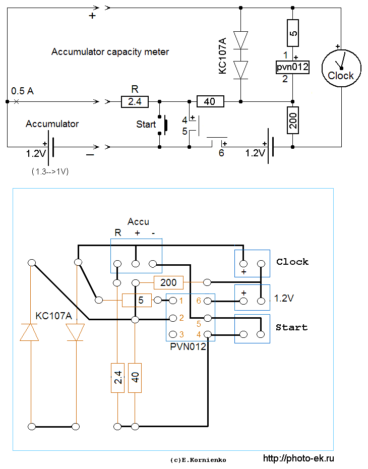

Accumulator capacity meter. An example of wire-arrangement.

(explanation for the scheme)
I use 30-40 NiMh accumulators in my gadgets. They have already
work more than 100 cycles of discharge and feel well. Once a year
I measure their capacity, and 2-3 cells occur bad - their capacity
is 2 times less than their mark.
I met some common reasons why an accumulator decreased its capacity too soon.
1) Overdischarge of an accumulator, which is left too long in a turned-on gadget.
2) Overheat of an accumulator because of too high charging current if not proper charger is used.
3) Accumulators may become bad because of self-discharge if they are not in use for long time.
")
A simpler scheme for 1 element AA or AAA was used to label these accumulators.